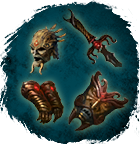
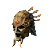
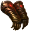
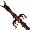
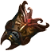

Шторм Хагура (Рыцарь 50)
Экипировка / Комплекты
Открыть в интерактивной вики →
| Редкость | Сет |
|---|
Части комплекта

Шлем Хагура Шлем Хагура
Перчатки Хагура Перчатки Хагура
Острие Хагура Острие Хагура
Эгида Хагура Эгида ХагураГде добыть


Бонус комплекта
Шанс критического удара +10
Расход выносливости +-8
Здоровье +160
Расход выносливости +-8
Здоровье +160